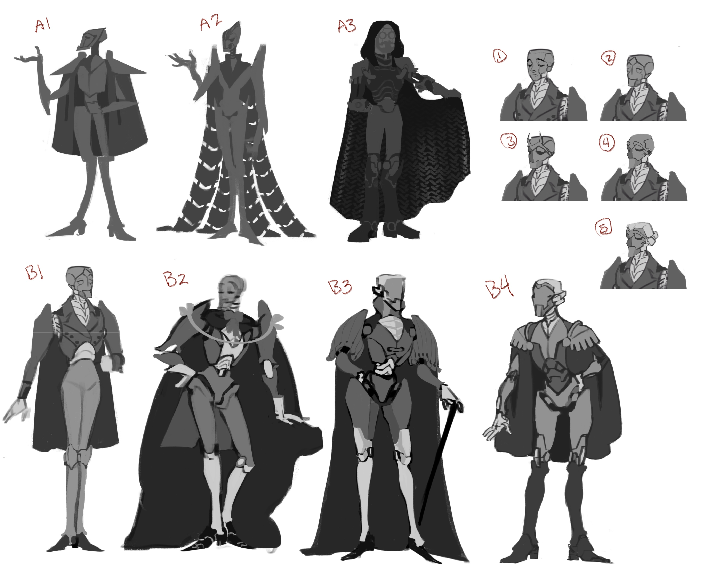
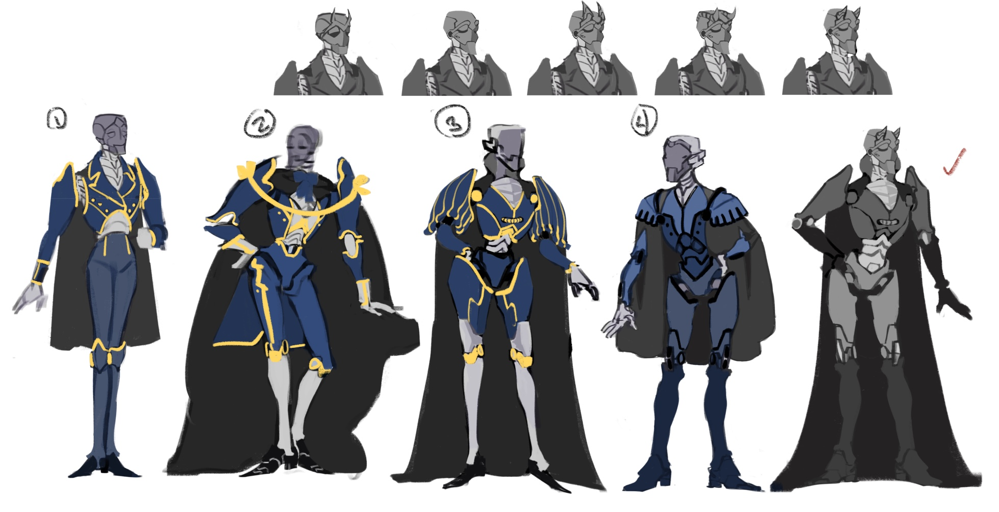
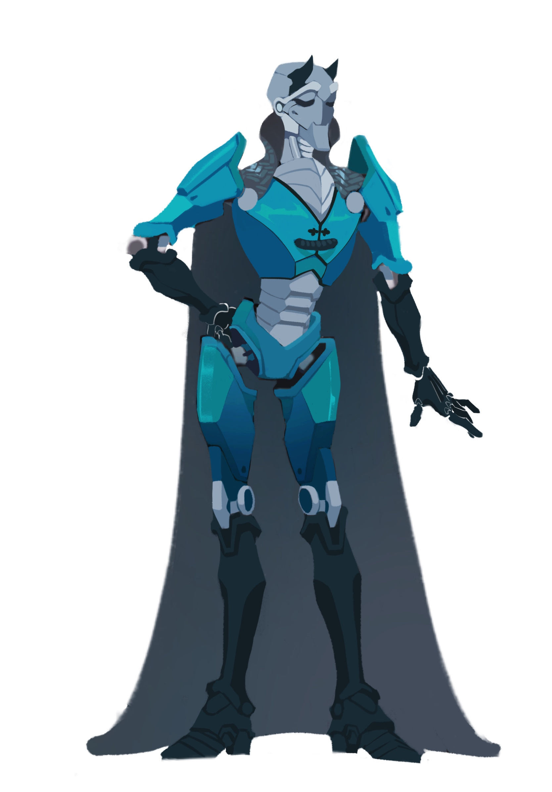
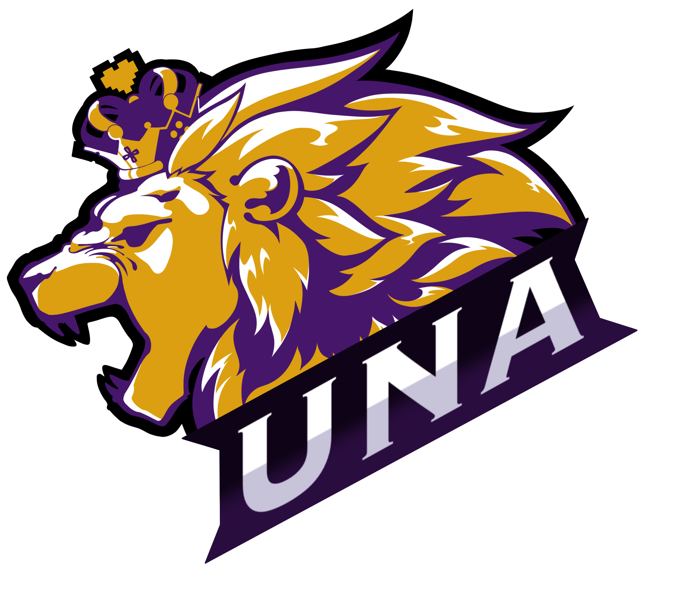

Projects
Dive into Rachel's dynamic world of digital artistry, where she crafts captivating school mascots, board game illustration, and iconic beer can designs. With a keen eye for detail and bold creativity, Rachel turns client's vision into visual masterpieces.

A Dragonborn character study that utilizes photo references of various lizard and amphibian species, incorporating their unique features to emphasize their scheming personality.

This character expression sheet was created to help understand how this confused but curious poltergeist character would move and pose.
Example of Rachel's project from start to finish...
Her projects begins with brainstorming and conceptualization, using various methods to develop ideas and inspiration. The production phase involves creating the artwork using digital tools and software, experimenting with different techniques and styles. The post-production phase refines and polishes the artwork, adjusting colors, lighting, composition, and other elements to create the final piece.

This character design began with finding a silhouette and inspiration from fictional and historical figures.

The second stage began with exploring details, then mapping color and defining faces.

In the final stage, polish was added and all of the components were pulled together to fit the clients vision.
Other commisioned projects:
The commissioned art projects included creating a logo for a college gaming club, designing a board game, and creating a beer bottle label.

For the college gaming club logo, the artist worked closely with the club members to understand their vision and preferences and created two variations of the logo. After feedback and revisions, the final design was chosen and refined to create a clean and professional logo that reflected the club's identity.

A variation of the same logo.

The beer bottle label design was also a collaborative process, with the artist working closely with the client to create a label that was both visually striking and aligned with their branding goals.
Interested in a commissioned art piece? Feel free to reach out to me for more information.
×